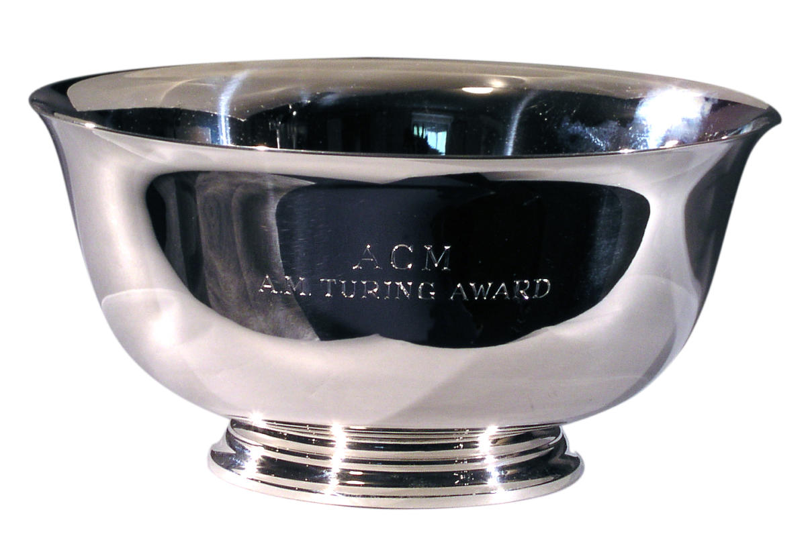
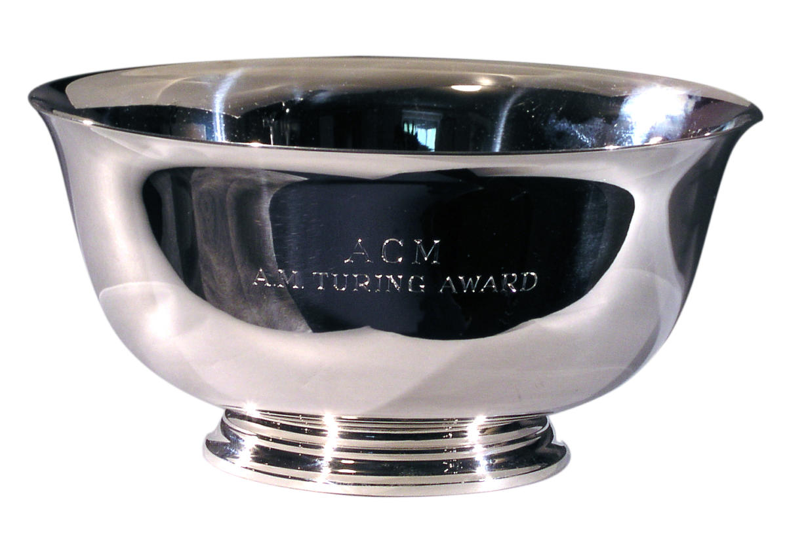

Wat gaan we doen?
Wij hebben de opdracht gekregen om voor informatica een website te maken over de A.M. Turing Award.
Ook over mensen waaronder Alonzo Church, Claude Shannon, en Alan Turing en Ken Thompson

Wij hebben de opdracht gekregen om voor informatica een website te maken over de A.M. Turing Award.
Ook over mensen waaronder Alonzo Church, Claude Shannon, en Alan Turing en Ken Thompson

Wij moesten een persoon kiezen waar we vervolgens verder op moesten inzoomen.
Hier hebben wij ervoor gekozen om voor Ken Thompson te gaan.
Deze meneer is erg belangrijk geweest in de informatica en heeft daarom
ook de prestigieuze A.M. Turing Award gewonnen.
De rest van de personen die we op deze website bespreken zijn ook heel erg
belangrijk geweest in de informatica. Uiteindelijk zijn er zelfs awards naar
deze mensen genoemd: De “Alonzo Church Award”,
de “Claude E. Shannon Award
en natuurlijk de “Turing Award”
Wij hebben ook een stukje over Unix en Programmeertaal B toegevoegd.
In de ontwikkeling van deze dingen heeft Ken Thompson, onze hoofdpersoon,
een grote rol gespeelt.
Wil jij contact met ons opnemen over op onze site?
Dingen als vragen en opmerkingen zijn van harte welkom.
U kunt uw gegevens en bericht hieronder invullen: